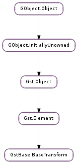

| Subclasses: | GstAudio.AudioFilter, GstVideo.VideoFilter |
|---|
| get_allocator() | |
| get_buffer_pool() | |
| is_in_place() | |
| is_passthrough() | |
| is_qos_enabled() | |
| reconfigure_sink() | |
| reconfigure_src() | |
| set_gap_aware(gap_aware) | |
| set_in_place(in_place) | |
| set_passthrough(passthrough) | |
| set_prefer_passthrough(prefer_passthrough) | |
| set_qos_enabled(enabled) | |
| update_qos(proportion, diff, timestamp) |
| Name | Type | Flags | Description |
|---|---|---|---|
| qos | bool | r/w | Handle Quality-of-Service events |
None
| Name | Type | Access |
|---|---|---|
| element | Gst.Element | r |
| have_segment | bool | r |
| segment | Gst.Segment | r |
| sinkpad | Gst.Pad | r |
| srcpad | Gst.Pad | r |
Bases: Gst.Element
This base class is for filter elements that process data.
It provides for:
Use Cases
Element has no interest in modifying the buffer. It may want to inspect it, in which case the element should have a transform_ip function. If there is no transform_ip function in passthrough mode, the buffer is pushed intact.
On the GstBase.BaseTransformClass is the passthrough_on_same_caps variable which will automatically set/unset passthrough based on whether the element negotiates the same caps on both pads.
passthrough_on_same_caps on an element that doesn’t implement a transform_caps function is useful for elements that only inspect data (such as level)
The element must implement a transform_ip function.
Output buffer size must <= input buffer size
If the always_in_place flag is set, non-writable buffers will be copied and passed to the transform_ip function, otherwise a new buffer will be created and the transform function called.
Incoming writable buffers will be passed to the transform_ip function immediately.
only implementing transform_ip and not transform implies always_in_place = True
The element does not require writable data, but non-writable buffers should be subbuffered so that the meta-information can be replaced.
Elements wishing to operate in this mode should replace the prepare_output_buffer method to create subbuffers of the input buffer and set always_in_place to True
always_in_place flag is not set, or there is no transform_ip function
Element will receive an input buffer and output buffer to operate on.
Output buffer is allocated by calling the prepare_output_buffer function.
Elements which need to do special allocation of their output buffers beyond allocating output buffers via the negotiated allocator or buffer pool should implement the prepare_output_buffer method.
Sub-class settable flags on GstBase.BaseTransform
Determines whether a non-writable buffer will be copied before passing to the transform_ip function.
Implied True if no transform function is implemented.
Implied False if ONLY transform function is implemented.
| Return type: | allocator: Gst.Allocator, params: Gst.AllocationParams |
|---|
Lets GstBase.BaseTransform sub-classes to know the memory allocator used by the base class and its params.
Unref the allocator after use it.
| Returns: | the instance of the Gst.BufferPool used by trans ; free it after use it |
|---|---|
| Return type: | Gst.BufferPool |
| Returns: | True is the transform is configured in in_place mode. MT safe. |
|---|---|
| Return type: | bool |
See if trans is configured as a in_place transform.
| Returns: | True is the transform is configured in passthrough mode. MT safe. |
|---|---|
| Return type: | bool |
See if trans is configured as a passthrough transform.
| Returns: | True if QoS is enabled. MT safe. |
|---|---|
| Return type: | bool |
Queries if the transform will handle QoS.
Instructs trans to request renegotiation upstream. This function is typically called after properties on the transform were set that influence the input format.
Instructs trans to renegotiate a new downstream transform on the next buffer. This function is typically called after properties on the transform were set that influence the output format.
| Parameters: | gap_aware (bool) – New state |
|---|
If gap_aware is False (the default), output buffers will have the Gst.BufferFlags.GAP flag unset.
If set to True, the element must handle output buffers with this flag set correctly, i.e. it can assume that the buffer contains neutral data but must unset the flag if the output is no neutral data.
MT safe.
| Parameters: | in_place (bool) – Boolean value indicating that we would like to operate on in_place buffers. |
|---|
Determines whether a non-writable buffer will be copied before passing to the transform_ip function.
MT safe.
| Parameters: | passthrough (bool) – boolean indicating passthrough mode. |
|---|
Set passthrough mode for this filter by default. This is mostly useful for filters that do not care about negotiation.
Always True for filters which don’t implement either a transform or transform_ip method.
MT safe.
| Parameters: | prefer_passthrough (bool) – New state |
|---|
If prefer_passthrough is True (the default), trans will check and prefer passthrough caps from the list of caps returned by the transform_caps vmethod.
If set to False, the element must order the caps returned from the transform_caps function in such a way that the prefered format is first in the list. This can be interesting for transforms that can do passthrough transforms but prefer to do something else, like a capsfilter.
MT safe.
| Parameters: | enabled (bool) – new state |
|---|
Enable or disable QoS handling in the transform.
MT safe.
| Parameters: |
|---|
Set the QoS parameters in the transform. This function is called internally when a QOS event is received but subclasses can provide custom information when needed.
MT safe.